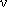

Опубликовано в Соросовском образовательном журнале, N 11, 1999 г.
- Виды радиоактивных превращений атомных ядер
- Современные представления об альфа-распаде
- Многочастичная теория альфа-распада
- Многочастичная теория протонной радиоактивности
- Кластерный распад атомных ядер
- Заключение
- Литература
В 1996 году физическая общественность отметила столетие со дня открытия радиоактивности атомных ядер. Это открытие привело к рождению новой физики, позволившей понять структуру атома и атомного ядра, и послужило воротами в странный и гармоничный квантовый мир элементарных частиц. Как и в случае многих выдающихся открытий, обнаружение радиоактивности произошло случайно. В начале 1896 года сразу после открытия В.К. Рентгеном X-лучей французский физик Анри Беккерель в процессе проверки гипотезы о флуоресцентной природе рентгеновского излучения обнаружил, что ураново-калиевая соль самопроизвольно, спонтанно, без внешних воздействий испускает жесткое излучение. Позже Беккерель установил, что данное явление, названное им радиоактивностью, то есть лучевой активностью, целиком связано с присутствием урана, который стал первым радиоактивным химическим элементом. Через несколько лет подобные свойства были обнаружены у тория, затем у полония и радия, открытых Мари и Пьером Кюри, а в дальнейшем у всех химических элементов, номера которых больше 82. С появлением ускорителей и ядерных реакторов у всех химических элементов были обнаружены радиоактивные изотопы, большинство которых практически не встречаются в естественных условиях.
ВИДЫ РАДИОАКТИВНЫХ ПРЕВРАЩЕНИЙ АТОМНЫХ ЯДЕР
Анализируя проникающую способность
радиоактивного излучения урана, Э. Резерфорд обнаружил
две составляющие этого излучения: менее
проникающую, названную α-излучением, и более проникающую,
названную  -излучением.
Третья составляющая урановой радиации, самая
проникающая из всех, была открыта позже, в 1900
году, Полем Виллардом и названа по аналогии с
резерфордовским рядом γ-излучением. Резерфорд и его сотрудники
показали, что радиоактивность связана с распадом
атомов (значительно позже стало ясно, что речь
идет о распаде атомных ядер), сопровождающимся
выбросом из них определенного типа излучений.
Этот вывод нанес сокрушительный удар по
господствовавшей в физике и химии концепции
неделимости атомов.
-излучением.
Третья составляющая урановой радиации, самая
проникающая из всех, была открыта позже, в 1900
году, Полем Виллардом и названа по аналогии с
резерфордовским рядом γ-излучением. Резерфорд и его сотрудники
показали, что радиоактивность связана с распадом
атомов (значительно позже стало ясно, что речь
идет о распаде атомных ядер), сопровождающимся
выбросом из них определенного типа излучений.
Этот вывод нанес сокрушительный удар по
господствовавшей в физике и химии концепции
неделимости атомов.
В последующих исследованиях
Резерфорда было показано, что α-излучение представляет собой поток α-частиц, которые являются
не чем иным, как ядрами изотопа гелия 4Не, а β-излучение
состоит из электронов. Наконец, γ-излучение оказывается
родственником светового и рентгеновского
излучений и является потоком высокочастотных
электромагнитных квантов, испускаемых атомными
ядрами при переходе из возбужденных в более
низколежащие состояния.
Очень любопытной оказалась природа β-распада ядер.
Теория этого явления была создана лишь в 1933 году
Энрико Ферми, который
использовал гипотезу Вольфганга
Паули о рождении в β-распаде нейтральной частицы, имеющей
близкую к нулю массу покоя и названной нейтрино . Ферми обнаружил, что β-распад
обусловлен новым типом взаимодействия частиц в
природе - "слабым" взаимодействием и связан
с процессами превращения в родительском ядре
нейтрона в протон с испусканием электрона е-
и антинейтрино  (β--распад), протона в нейтрон с
испусканием позитрона е+ и нейтрино ν (β+-распад), а также с захватом
протоном атомного электрона и испусканием
нейтрино ν (электронный захват).
(β--распад), протона в нейтрон с
испусканием позитрона е+ и нейтрино ν (β+-распад), а также с захватом
протоном атомного электрона и испусканием
нейтрино ν (электронный захват).
Четвертый вид радиоактивности,
открытый в России в 1940 году молодыми физиками Г.Н. Флеровым и
К.А. Петржаком, связан со спонтанным
делением ядер, в процессе которого некоторые
достаточно тяжелые ядра распадаются на два
осколка с примерно равными массами.
Но и деление не исчерпало всех видов
радиоактивных превращений атомных ядер. Начиная
с 50-х годов физики методично приближались к
открытию протонной радиоактивности ядер. Для
того чтобы ядро, находящееся в основном
состоянии, могло самопроизвольно испускать
протон, необходимо, чтобы энергия отделения
протона от ядра была положительной. Но таких ядер
в земных условиях не существует, и их необходимо
было создать искусственно. К получению таких
ядер были очень близки российские физики в Дубне,
но протонную радиоактивность открыли в 1982 году
немецкие физики в Дармштадте, использовавшие
самый мощный в мире ускоритель многозарядных
ионов.
Наконец, в 1984 году независимые группы
ученых в Англии и России открыли кластерную
радиоактивность некоторых тяжелых ядер,
самопроизвольно испускающих кластеры - атомные
ядра с атомным весом от 14 до 34.
В табл. 1 представлена история открытия
различных видов радиоактивности. Исчерпаны ли
ими все возможные виды радиоактивных
превращений ядер, покажет время. А пока
интенсивно продолжаются поиски ядер, которые
испускали бы из основных состояний нейтрон
(нейтронная радиоактивность) или два протона
(двухпротонная радиоактивность) .
{kind=link}
Таблица 1. История открытия различных видов радиоактивности
| Тип радиоактивности ядер | Вид обнаруженного излучения | Год открытия | Авторы открытия |
| Радиоактивность атомных ядер | Излучение | 1896 | А. Беккерель |
| Альфа-распад | 4Не | 1898 | Э. Резерфорд |
| Бета-распад | e- | 1898 | Э. Резерфорд |
| Гамма-распад | γ-Квант | 1900 | П. Виллард |
| Спонтанное деление ядер | Два осколка | 1940 | Г.Н. Флеров, К.А. Петржак |
| Протонный распад | p | 1982 | 3. Хофман и др. |
| Кластерный распад | 14C | 1984 | X. Роуз, Г. Джонс; Д.В. Александров и др. |
СОВРЕМЕННЫЕ ПРЕДСТАВЛЕНИЯ ОБ АЛЬФА-РАСПАДЕ
Все виды радиоактивных превращений ядер удовлетворяют экспоненциальному закону:
N(t) = N(0)exp(-λt),
где N(t) - число радиоактивных ядер, выживших к моменту времени t > 0, если в момент t = 0 их число было N(0). Величина λ, совпадает с вероятностью распада радиоактивного ядра в единицу времени. Тогда время Т1/2, называемое периодом полураспада, за которое число радиоактивных ядер уменьшается в два раза, определяется как
Т1/2 = (ln2)/λ,.
Значения Т1/2 для α-излучателей меняются в широком диапазоне от 10-10 секунды до 1020 лет в зависимости от величины энергии Q относительного движения α-частицы и дочернего ядра, которая при использовании законов сохранения энергии и импульса при α-распаде определяется как
Q = B(A-4,Z-2) + В(4,2) - В(А, Z),
 Рис.1. Зависимость lgТ1/2 от Q-1/2 для четно-четных изотопов полония Po, радона Rn и радия Ra |
где В(А, Z) - энергия связи родительского ядра. Для всех исследованных α-переходов величина Q > 0 и не превосходит 10 МэВ. В 1910 году Ганс Гейгер и Джордж Нэттол экспериментально обнаружили закон, связывающий период полураспада Т1/2 с энергией Q:
| lgТ1/2 = В + СQ-1/2 | (1) |
где величины В и С не зависят от Q. Рисунок 1 иллюстрирует указанный закон для четно-четных изотопов полония, радона и радия. Но тогда появляется очень серьезная проблема. Потенциал взаимодействия V(R) α-частицы и дочернего ядра в зависимости от расстояния R между их центрами тяжести можно качественно представить следующим образом (рис. 2). На больших расстояниях R они взаимодействуют кулоновским образом и потенциал

 Рис.2. Зависимость потенциала взаимодействия V(R) |
На малых же расстояниях R в игру вступают короткодействующие ядерные силы и потенциал V(R) становится притягивающим. Поэтому в потенциале V(R) появляется барьер, положение RB максимума которого VB = V(RB) лежит для тяжелых ядер с Z ≈ 82 в районе 10-12 см, а величина VB = 25 МэВ. Но тогда возникает вопрос, как а-частица с энергией Q < VB может выйти из радиоактивного ядра, если в подбарьерной области величина ее кинетической энергии К = Q - V(R) становится отрицательной и с точки зрения классической механики движение частицы в этой области невозможно. Решение этой проблемы было найдено в 1928 году русским физиком Г.А. Гамовым. Опираясь на незадолго до того времени созданную квантовую механику, Гамов показал, что волновые свойства α-частицы позволяют ей с определенной вероятностью Р просачиваться через потенциальный барьер. Тогда, если принять, что α-частица существует в полностью сформированном виде внутри ядра, для вероятности его α-распада в единицу времени А, возникает формула
| λ = 2νP. | (2) |
где 2ν - число ударов α-частицы о внутреннюю стенку барьера, определяемое частотой ν колебаний α-частицы внутри родительского ядра. Тогда, рассчитав квантово-механически величину Р и оценив v в простейших приближениях, Гамов получил для lgТ1/2 закон Гейгера-Нэттола (1). Результат Гамова имел громадный резонанс в среде физиков, поскольку он продемонстрировал, что атомное ядро описывается законами квантовой механики. Но оставалась нерешенной главная проблема α-распада: откуда в тяжелых ядрах, состоящих из нейтронов и протонов, берутся α-частицы?
МНОГОЧАСТИЧНАЯ ТЕОРИЯ АЛЬФА-РАСПАДА
Многочастичная теория α-распада, в которой
последовательно решается проблема формирования α-частицы из нейтронов и
протонов родительского ядра, возникла в начале
50-х годов и в последние годы получила
концептуальное завершение в работах некоторых
физиков, включая автора и его сотрудников. Эта
теория опирается на оболочечную модель ядра,
обоснованную в рамках теории ферми-жидкости
Л.Д. Ландау и
А.Б. Мигдалом, в
которой предполагается, что протон и нейтрон в
ядре движутся независимым образом в
самосогласованном поле, создаваемом остальными
нуклонами. Используя оболочечные волновые
функции двух протонов и двух нейтронов, можно
найти вероятность, с которой эти нуклоны
окажутся в  -частичном
состоянии. Тогда формулу Гамова (2) можно обобщить
как
-частичном
состоянии. Тогда формулу Гамова (2) можно обобщить
как
| λ = 2νWifP. | (3) |
где Wif и есть вероятность формирования
альфа-частицы из нуклонов родительского ядра i с
образованием конкретного состояния f дочернего
ядра. Расчеты величин Wif
продемонстрировали принципиальную важность
учета сверхтекучих свойств атомных ядер для
понимания природы альфа-распада.
Немного истории. В 1911 году Хейке Камерлинг-Оннес
обнаружил явление сверхпроводимости некоторых
металлов, для которых при температурах ниже
определенной критической сопротивление скачком
падает до нуля. В 1938 году П.Л. Капица
открыл явление сверхтекучести жидкого гелия 4Не,
состоящее в том, что при температурах ниже
некоторой критической жидкий гелий протекает
через тонкие капиллярные трубки без трения. Оба
этих явления долгое время рассматривались как
независимые, хотя многие физики интуитивно
чувствовали их родственность. Сверхтекучесть
жидкого гелия была объяснена в работах Н.Н. Боголюбова и
С.Т. Беляева тем, что
в нем при низких температурах осуществляется
бозе-конденсация, при которой большинство атомов
гелия аккумулируются в состоянии с нулевым
импульсом. Это возможно потому, что атомы гелия
имеют спин, равный нулю, и поэтому являются
бозе-частицами, которые могут в любых
количествах находиться в определенном квантовом
состоянии, например в состоянии с импульсом,
равным нулю. В отличие от атомов гелия электроны,
протоны и нейтроны имеют полуцелый спин и
являются ферми-частицами, для которых справедлив
принцип Паули, разрешающий находиться в
определенном квантовом состоянии только одной
частице. Объяснение сверхпроводимости металлов
основано на явлении, предсказанном Л. Купером,
когда два электрона в сверхпроводнике образуют
связанную систему, получившую название
куперовской пары. Полный спин этой пары равен
нулю, и ее можно рассматривать как бозе-частицу.
Тогда в сверхпроводнике происходит
бозе-конденсация куперовских пар с импульсами,
равными нулю, и в них возникает явление
сверхтекучести этих пар, родственное явлению
сверхтекучести жидкого гелия. Сверхтекучесть
куперовских пар и формирует сверхпроводящие
свойства металлов. Таким образом, два явления,
формально относящиеся к различным разделам
физики, - сверхпроводимость и сверхтекучесть -
оказались родственными физически. Природа не
любит терять свои прекрасные находки. Она
использует их в различных физических объектах.
Это и формирует единство физики.
В 1958 году Oге Бор
высказал гипотезу о существовании сверхтекучих
свойств у атомных ядер. Практически за один год
эта гипотеза была полностью подтверждена и
реализована в создании сверхтекучей модели
атомного ядра, в которой принимается, что пары
протонов или нейтронов объединяются в
куперовские пары со спином, равным нулю, а
бозе-конденсация этих пар формирует
сверхтекучие свойства ядер.
Поскольку α-частица
состоит из двух протонов и двух нейтронов с
суммарными спинами, равными нулю, то ее
внутренняя симметрия совпадает с симметрией
куперовских пар протонов и нейтронов в атомных
ядрах. Поэтому вероятность формирования α-частицы Wif
максимальна, если она образуется из двух
куперовских пар протонов и нейтронов. α-Переходы подобного типа
называются облегченными и происходят между
основными состояниями четно-четных ядер, где все
нуклоны спарены. Для таких переходов в случае
тяжелых ядер с Z > 82 величина Wif = 10-2.
Если в состав α-частицы
входит только одна куперовская пара (протонная
либо нейтронная), то подобные α-переходы, характерные для нечетных
ядер, называются полуоблегченными и для них Wif = 5*10-4.
Наконец, если  -частица
формируется из неспаренных протонов и нейтронов,
то α-переход называется
необлегченным и для него величина Wif = 10-5.
Опираясь на сверхтекучую модель ядра, автору и
его сотрудникам к 1985 году удалось успешно
описать на основе формул типа (3) не только
относительные, но и абсолютные вероятности α-распада атомных ядер.
-частица
формируется из неспаренных протонов и нейтронов,
то α-переход называется
необлегченным и для него величина Wif = 10-5.
Опираясь на сверхтекучую модель ядра, автору и
его сотрудникам к 1985 году удалось успешно
описать на основе формул типа (3) не только
относительные, но и абсолютные вероятности α-распада атомных ядер.
{kind=link}
МНОГОЧАСТИЧНАЯ ТЕОРИЯ ПРОТОННОЙ РАДИОАКТИВНОСТИ
Для надежного наблюдения протонного распада атомных ядер из основных и низколежащих возбужденных состояний необходимо, чтобы энергия относительного движения протона и дочернего ядра Q была положительной и в то же время заметно меньше высоты протонного потенциального барьера VB, чтобы время жизни протонораспадного ядра было не слишком малым для его экспериментального исследования. Такие условия, как правило, выполняются лишь для сильно нейтронодефицитных ядер, получение которых стало возможным лишь в последние годы. В настоящее время обнаружено более 25 протонных распадчиков из основных и изомерных (достаточно долгоживущих) возбужденных состояний ядер. С теоретической точки зрения протонный распад выглядит существенно проще, нежели α-распад, поскольку протон входит в состав ядра, и поэтому казалось, что можно воспользоваться формулами типа формулы (2). Однако очень скоро стало ясно, что практически все протонные переходы чувствительны к структуре родительского и дочерних ядер и необходимо использовать формулу (3), причем для расчета вероятностей Wif автору с сотрудниками пришлось развить многочастичную теорию протонной радиоактивности с учетом сверхтекучих эффектов. На основе этой теории удалось успешно описать все наблюдаемые случаи протонного распада, включая особенно непонятный случай распада долгоживущего изомерного состояния ядра 53Со, и сделать предсказания относительно новых наиболее вероятных кандидатов для наблюдения протонной радиоактивности. В то же время было продемонстрировано, что большинство протонораспадных ядер являются несферическими в отличие от первоначальных представлений.
КЛАСТЕРНЫЙ РАСПАД АТОМНЫХ ЯДЕР
В настоящее время экспериментально
обнаружено 25 ядер от 221Fr до 241Аm,
испускающих из основных состояний кластеры типа 14С,
20О, 24Ne, 26Ne, 28Mg, 30Mg, 32Si
и 34Si. Энергии относительного движения
вылетающего кластера и дочернего ядра Q меняются
от 28 до 94 МэВ и во всех случаях оказываются
заметно меньшими высоты потенциального барьера VB.
В то же время все исследованные
кластерно-радиоактивные ядра являются и α-распадными, причем
отношения вероятности  кл
их кластерного распада в единицу времени к
аналогичной вероятности λα для α-распада
уменьшаются при увеличении массы вылетающего
кластера и лежат в диапазоне от 10-9 до 10-16.
Столь малые значения подобных отношений никогда
ранее не анализировались для других видов
радиоактивности и демонстрируют рекордные
достижения экспериментаторов при наблюдении
кластерного распада.
кл
их кластерного распада в единицу времени к
аналогичной вероятности λα для α-распада
уменьшаются при увеличении массы вылетающего
кластера и лежат в диапазоне от 10-9 до 10-16.
Столь малые значения подобных отношений никогда
ранее не анализировались для других видов
радиоактивности и демонстрируют рекордные
достижения экспериментаторов при наблюдении
кластерного распада.
В настоящее время развиваются два
теоретических подхода к описанию динамики
кластерного распада атомных ядер, являющиеся
фактически двумя возможными предельными
случаями. Первый подход рассматривает
кластерный распад как глубокоподбарьерное
сильно асимметричное по массам образующихся
осколков спонтанное деление. При этом
родительское ядро, находящееся в состоянии а
до момента разрыва в плавно перестраивается,
заметно изменяя свою форму и проходя через
промежуточную конфигурацию б, что
иллюстрирует рис. 3. Описание такой перестройки
осуществляется на основе коллективных моделей
ядра, являющихся обобщением гидродинамической
модели. Этот подход сталкивается в настоящее
время со значительными трудностями при описании
тонких характеристик кластерного распада.
 Рис.3. Эволюция кластерно-радиоактивного ядра в квазиделительной модели |
 Рис. 4. Рис.1. Зависимость lgТ1/2 от Q-1/2 для кластерных распадов четно-четных изотопов радия Ra и урана U |
Второй подход строится по аналогии с теорией α-распада. В этом случае описание перехода к конечной конфигурации в осуществляется без введения промежуточной конфигурации б сразу из конфигурации а на языке формулы типа (3) с использованием понятия вероятности формирования кластера Wif. Хорошим аргументом в пользу второго подхода является тот факт, что для кластерного распада, как и в случае α-распада, выполняется закон Гейгера- Нэттола (1), связывающий кластерный период полураспада Т1/2 и энергию Q. Этот факт иллюстрирует рис. 4. В рамках второго подхода автору и его сотрудникам удалось по аналогии с α-распадом провести классификацию кластерных переходов по степени облегченноcти, используя идеологию сверхтекучей модели ядра, и предсказать тонкую структуру в спектрах вылетающих кластеров. Позже указанная структура была обнаружена в экспериментах французской группы в Сакле. Данный подход позволил также разумно описать масштаб относительных и абсолютных вероятностей известных кластерных распадов и сделать предсказания по наблюдению кластерной радиоактивности у новых кластерно-распадных ядер.
ЗАКЛЮЧЕНИЕ
Исследования различных видов
радиоактивности атомных ядер продолжаются и в
настоящее время. Особый интерес проявляется к
изучению протонного распада ядер, поскольку в
этом случае удается получить уникальную
информацию о структуре ядер, лежащих за
пределами границ нуклонной устойчивости ядер.
Совсем недавно коллектив физиков под
руководством профессора К. Дэвидса в
Аргоннской национальной лаборатории (США)
синтезировал сильно нейтронодефицитное ядро 131Eu
и обнаружил не только протонный распад, но и
впервые тонкую структуру его протонного спектра.
Анализ этих явлений на основе теории, развитой
автором, позволил убедительно подтвердить
представление о сильной несферичности этого
ядра.
Иллюстрацией интереса к подобным
исследованиям является статья журналиста
М. Брауни под названием "Взгляд на необычные
ядра изменяет точку зрения на атомную
структуру", появившаяся в мартовском номере
газеты "Нью-Йорк тайме" в 1998 году, в которой в
популярной форме рассказывается о результатах,
полученных аргоннской группой, и способах их
интерпретации.
Приведенный выше обзор,
иллюстрирующий развитие представлений о природе
радиоактивности атомных ядер за целое столетие,
демонстрирует явное ускорение темпов получения
новых знаний в этой области особенно в последние
25 лет. И хотя ядерная физика является достаточно
развитой в экспериментальном и теоретическом
смысле наукой, несомненно, что продолжающиеся в
ее рамках, а также на стыке с другими науками
исследования способны уже в ближайшее время
подарить человечеству новые очень красивые и
удивительные результаты.
ЛИТЕРАТУРА
- Широков Ю.М., ЮдинН.П. Ядерная физика. М.: Наука, 1972.
- МигдалА.Б. Теория конечных ферми-систем и свойства атомных ядер. М.: Наука, 1984.
- Кадменский С.Г., Фурман В.И. Альфа-распад и родственные ядерные реакции. М.: Энергоатомиздат, 1985.
- Замятин Ю.С., Кадменский С.Г., Фурман В.И. и др. Кластерная радиоактивность - достижения и перспективы // Физика элементар. частиц и атом. ядра. 1990. Т. 21, вып. 2. С. 537-594.
- Кадменский С.Г., Бугров В.П. Протонный распад и форма нейтронодефицитных ядер // Ядер, физика. 1996. Т. 59. С. 424-427.